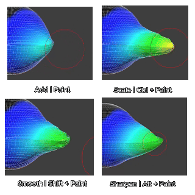
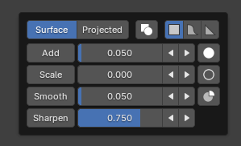
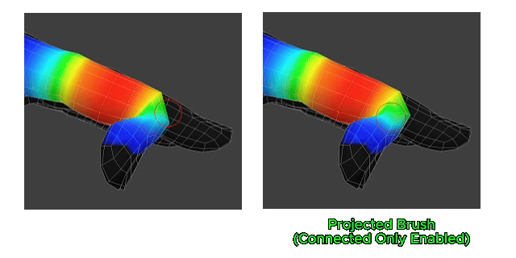

Weight Painting with Brush¶
Brush Shortcuts¶

Brush Options¶

Brush Falloff¶

Connected Only Option for Brush¶
Check the "Connected Only" option to limit weight painting to connected surface parts only.




Check the "Connected Only" option to limit weight painting to connected surface parts only.
